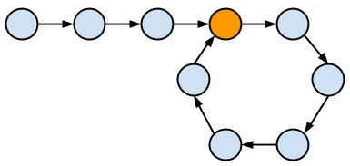
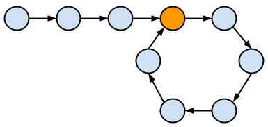
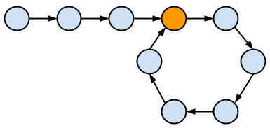
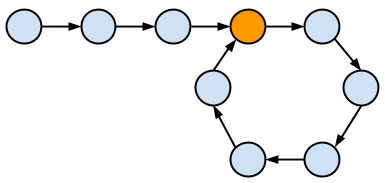

Graphs are one of the most common data structures. Many times, it is extremely important for us to detect if the graph contains a cycle, such scheduling problems, traffic problems etc. Knowledge of cycles in the graph leads to different algorithmic optimizations.
In this note, I will discuss primary techniques of cycle detections in,
1. Linked List
PS: Nodes are in singly linked list with two fields, val and next, and both types of graphs have n vertices labelled from 0,1,2,...,n-1, with edge informations stored in adjacent list called graph.
For Singly Linked lists, the optimized method for detecting cycle is the so-called Floyd's "Tortoise and Hare" cycle-finding algorithm.
The idea is that one uses a slow pointer and a fast pointer to traverse the list. Assuming the cycle length is finite, the fast pointer much at one time overtakes the slow pointer in the cycle. For general case, we give the slow pointer speed of 1 and the fast pointer speed of 2. The code is very simple.
def hasCycle(head):
fast = slow = head
while fast and fast.next and fast.next.next:
fast = fast.next.next
slow = slow.next
if fast == slow: return True
return False
We can even find the starting point of the cycle: Once fast and slow pointer meet, move the slow pointer to the head of the linked list. Then increment both pointers with speed 1. The final place they meet will be the starting point of the cycle.
Here is the short proof mathematically: Observe that m*R+x+c = 2(n*R+x+c) gives us x+c = (m-2n)*R, where R is the cycle length, x is the distance two pointers first met, c is the distance from head to starting point, m, n are integers. The relation tells us x + c is divisible by cycle length. So incrementing c steps must give us the starting point!
def findCycleStart(head):
fast = slow = head
while fast and fast.next and fast.next.next:
fast = fast.next.next
slow = slow.next
if fast == slow:
slow = head
while fast != slow:
fast = fast.next
slow = slow.next
return fast
return None
For directed graphs, cycle detections can be thought of as finding "back edge" in the graph, a.k.a. finding the vertex being processed while processing its children. We can use either DFS with states/colors or Kahn's algorithms for Topological Sorting (BFS in nature). Both methods achieve O(V+E) time complexity. See the figure below (Source: GeeksforGeeks) if you need review different types of edges in a directed graph:

Firstly, let us look at one way of DFS implementation of cycle detection, by storing vertices being processed in recStack array to check if the node is a back edge.
def hasCycle(n, graph):
visited = [False]*n
recStack = [False]*n
for node in range(n):
if not visited[i]:
if dfs(node, visited, recStack):
return True
return False
def dfs(node, visited, recStack, graph):
visited[node] = True # processed
recStack[node] = True # being processed
for nei in graph[node]:
if not visited[nei]:
if dfs(nei, visited, recStack):
return True
elif recStack[nei]:
return True
recStack[node] = False # finish processing
return False
Another popular way (also my favorite) is to encode DFS states for each vertex is done by using colors, "WHITE", "GRAY" "BLACK", like in the CLRS book. Two methods are entirely equivalent, but this one looks cleaner.
def hasCycle(n, graph):
# WHITE (0) = vertex not processed yet
# GRAY (1) = vertex being processed (recStack == True)
# BLACK (2) = vertex and all its descendant are processed
colors = [0]*n
for node in range(n):
if colors[node] == 0:
if dfs(node, colors):
return True
return False
def dfs(node, colors, graph):
colors[node] = 1 # being processed
for nei in graph[node]:
if colors[nei] == 0 and dfs(nei, colors):
return True
if colors[nei] == 1:
return True
colors[node] = 2 # finish processing
return False
Kahn's algorithm for Topological sorting is also very powerful in cycle detection. First one need to compute the indegrees of all the nodes and store them in an array or dictionary. Then by using a BFS starting with the 0-indegree nodes, one gradually "peeling" off nodes. If all the nodes are "peeled", the graph is acyclic. Otherwise, there must be a cycle.
Here is an implementation, assuming we already got a variable called indegrees of the indegrees of all the nodes.
def hasCycle(n, graph, indegrees):
zeros = [node for node in range(n) if indegrees[node] == 0]
queue = collections.deque(zeros)
count = 0
while queue:
node = queue.popleft()
for nei in graph[node]:
indegrees[nei] -= 1
if indegrees[nei] == 0:
queue.append(nei)
count += 1
return count == n
It is such a beautiful algorithm, especially powerful and widely used in topological sorting problems, such as finding the longest increasing sequence in matrix, finding super sequences, and finding topological order for foreign languages. Find more problems on topological sorting here.
For undirected graph, edges are bi-drectional. We can detect cycles using DFS with slight modification, achieveing O(V+E) time. Moreover, we can use union find to detect cycles in linear O(E) time.
For DFS to work, we need to set a parent variable to prevent the node to talk to its direct parent. When we find a neighbor that is visited and is not a direct parent, then it must be an anscester which means a cycle is found.
def hasCycle(n, graph):
visited = [False]*n
for node in range(n):
if not visited[node]:
if dfs(node, visited, -1):
return True
return False
def dfs(node, visited, parent, graph):
visited[node] = True
for nei in graph[node]:
if not visited[nei]:
if dfs(nei, visited, node):
return True
elif nei != parent:
return True
return False
Now if we use the List Implementation of UF Class defined in the earlier note, we have the following Union Find code for detecting cycles in undirected graph:
import UF
def hasCycle(n, edges): # Here we just take all edges, as usually it is even easier to obtain than graphs
graph = UF(n)
for u, v in edges:
ur = graph.find(u)
vr = graph.find(v)
if ur == vr: return True
graph.union(ur, vr)
return False